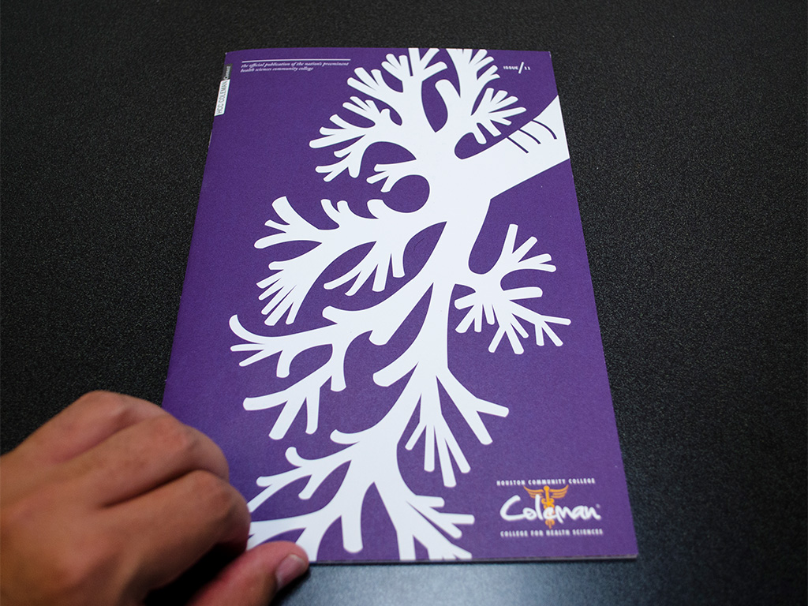
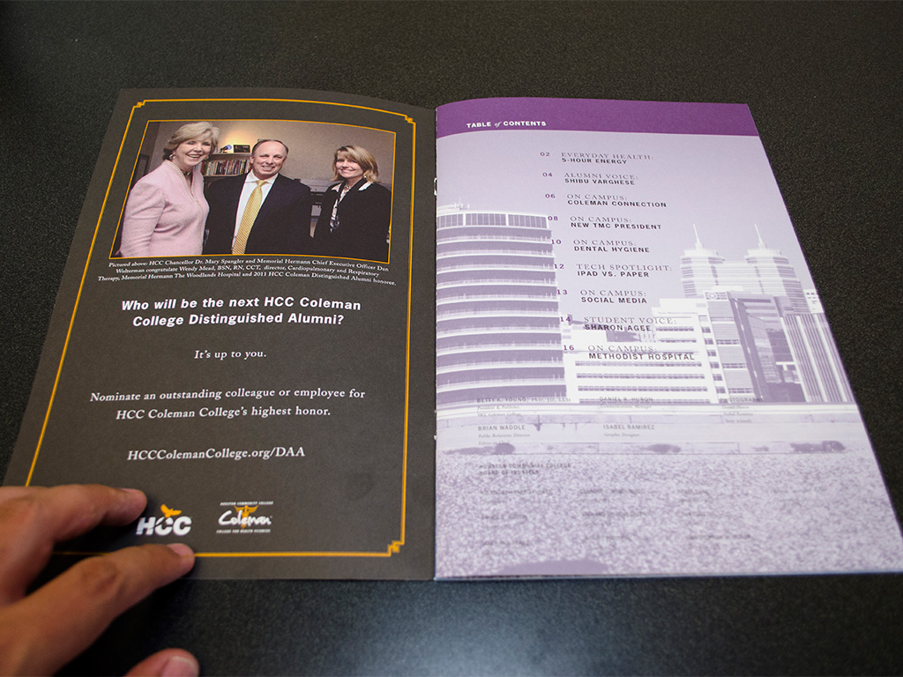
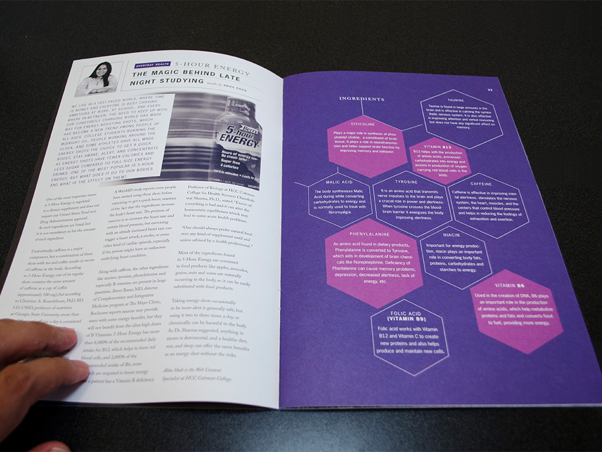
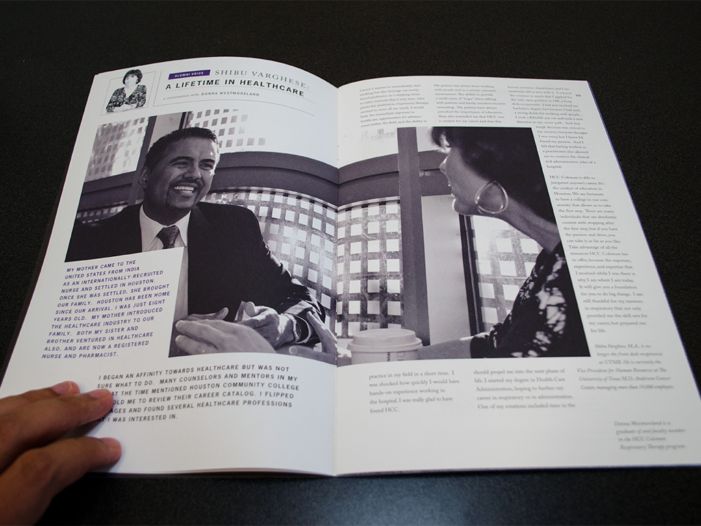
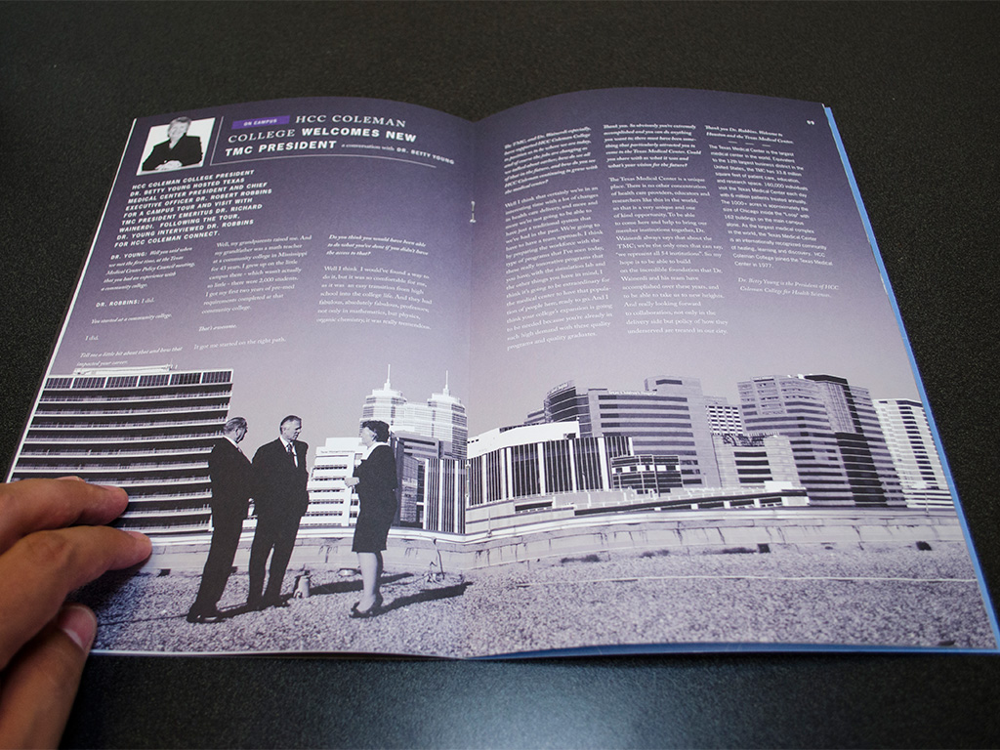
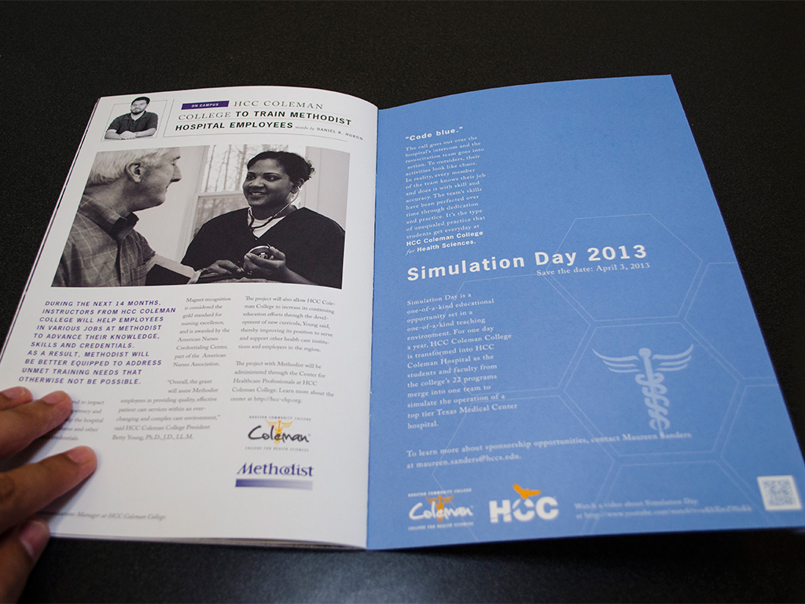

HCC Coleman College's Coleman Magazine
One afternoon, while chatting with the Public Relations Director at HCC Coleman College, I brought up the idea of turning our two-page newsletter into something much more robust: I wanted to create a magazine. The PR DIrector loved the idea and Coleman Magazine was born.
This was no simple task. Developing ideas, writing stories, editing, taking photographs, editing - my PR Director and I did it all. At the beginning, the plan was to publish the magazine six times a year, then seasonally. Eventually we settled on once a semester. As the number of issues dropped, our aspirations of what the publication could be only grew.
I was involved in the development of story ideas. I conducted interviews, researched subjects, wrote and edited stories. I took and edited photographs. I designed layouts and supervised our graphic designer’s work. I guided the magazine through the printing process.
The HCC Coleman Public Relations Department was awarded a 2012 Silver Paragon award in magazine design from the National Council for Marketing and Public Relations (NCMPR). The department also earned a NCMPR Gold Medallion Award in 2012 and a Silver Medallion Award in 2010 for magazine design.
     